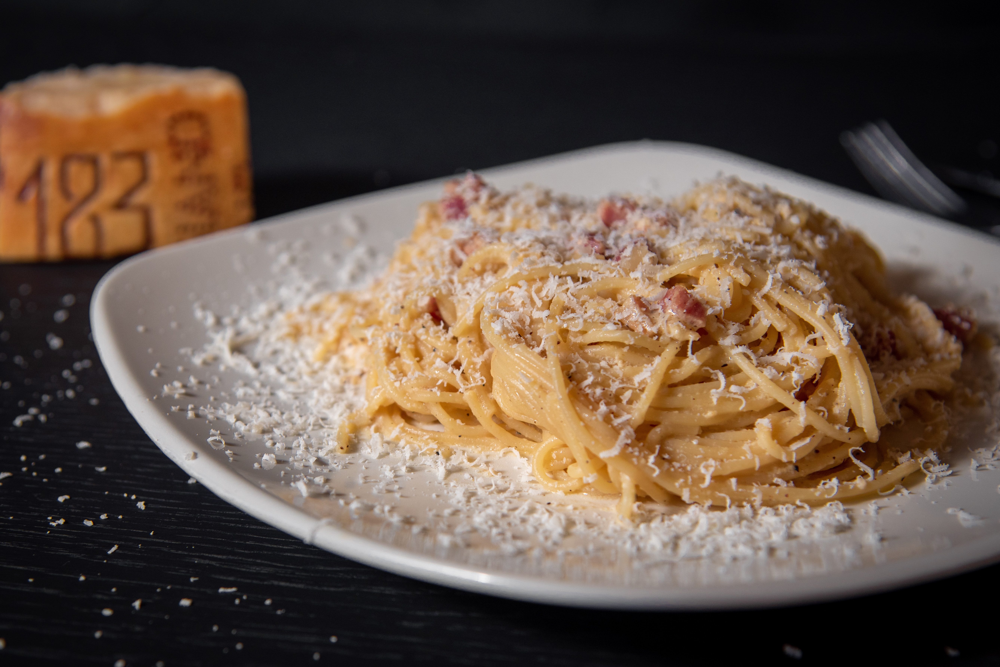

Description
A pasta dish made with eggs, cheese, pork and pepper.
Ingredients
- 3 egg yolks
- 40g Parmesan cheese
- A single 150g piece of pancetta
- 200g of dried spaghetti
- 1 clove of garlic
- extra virgin olive oil
Steps
- Put the egg yolks into a bowl, finely grate in the Parmesan, season with pepper, then mix well with a fork and put to one side.
- Cut any hard skin off the pancetta and set aside, then chop the meat.
- Cook the spaghetti in a large pan of boiling salted water until al dente.
- Rub pancetta skin over base of medium frying pan with a medium-high heat.
- Peel garlic, crush it, add to the pan, and leave it for one minute. Stir pancetta, cook for 4 minutes until it starts to crisp.
- Pick out and discard the garlic from the pan, reserve some of the cooking water, drain and then add spaghetti.
- Add bit of the water and toss well. Season with pepper, pour in egg mixture.
- Serve with grating of Parmessan and extra twist of pepper.